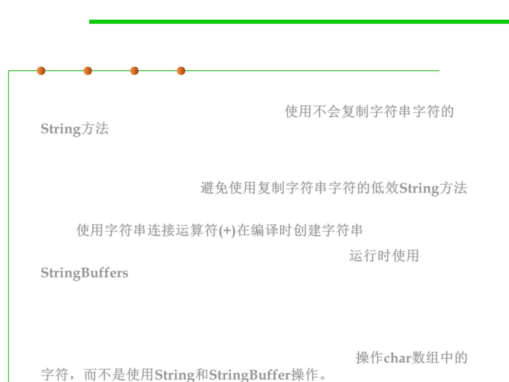

8.3 Code Tuning for Performance Optimization
Some Suggestions on Code Tuning for Strings
▪ Use efficient methods of String that do not copy the characters of
the string, e.g., String.substring().使用不会复制字符串字符的
String方法
▪ Avoid using inefficient methods of String that copy the characters of
the string, e.g., String.toUppercase() and
String.toLowercase().避免使用复制字符串字符的低效String方法
▪ Use the string concatenation operator to create Strings at compile
time. 使用字符串连接运算符(+)在编译时创建字符串
▪ Use StringBuffers to create Strings at runtime. 运行时使用
StringBuffers
▪ Improve access to the underlying String char array by copying the
chars into your own array.
▪ Manipulate characters in char arrays rather than using String and
StringBuffer manipulation. Reuse char arrays.操作char数组中的
字符，而不是使用String和StringBuffer操作。